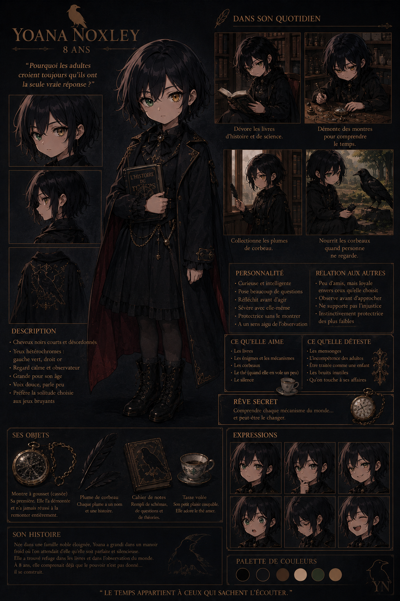

Résumé
Yoana Noxley est une aristocrate britannique établie à Paris, connue dans les salons de la capitale pour son élégance impeccable et sa collection d'art occulte. À 24 ans, elle fréquente les cercles les plus fermés de l'Europe, où son nom est synonyme de raffinement et de mystère.
Surnommée « The Black Raven » par les chroniqueurs mondains, on dit d'elle qu'elle possède le don de deviner les secrets de ses interlocuteurs avant qu'ils ne les confient. Ses yeux hétérochromatiques — vert à gauche et doré à droite — sont devenus sa signature, immortalisée par plusieurs portraitistes de renom.
Elle organise des soirées exclusives dans son hôtel particulier du Marais, où les invités découvrent des objets rares et des manuscrits anciens. On raconte que sa montre à gousset, héritage familial, ne marque pas l'heure mais quelque chose d'autre — une énigme que personne n'a résolue.
Le temps appartient à ceux qui savent l'écouter.
Résumé Classifié
Yoana Noxley est la directrice actuelle de l'Office pour la Gestion, le Confinement et l'Élimination des Entités Surnaturelles. À seulement 24 ans, elle dirige l'une des organisations les plus secrètes et les plus anciennes d'Europe avec une poigne de fer dissimulée sous des gants de velours.
Surnommée « The Black Raven » par ses pairs, Yoana est connue pour sa capacité à anticiper les mouvements de ses ennemis avant qu'ils ne les fassent eux-mêmes. Son regard perçant — hétérochromatique, vert à gauche et doré à droite — est devenu légendaire dans les cercles occultes de l'Europe entière.
Elle porte toujours une montre à gousset qui ne marque pas l'heure, mais quelque chose d'autre. Personne ne sait quoi exactement. Personne n'ose demander.
Le pouvoir n'est pas dans le fait de frapper fort. Le pouvoir est dans le fait de savoir exactement où frapper.
Enfance
Née en 1896 dans une famille noble éloignée, Yoana a grandi dans un manoir froid où l'on attendait d'elle qu'elle soit parfaite et silencieuse. Elle a trouvé refuge dans les livres et dans l'observation du monde qui l'entourait.
Pourquoi les adultes croient toujours qu'ils ont la seule vraie réponse ?
— Yoana Noxley, 8 ans
- Cheveux noirs courts et désordonnés, regard calme et observateur.
- Dévore les livres d'histoire et de science — une soif insatiable de connaissances.
- Démonte des montres pour comprendre le temps, collectionne les plumes de corbeau.
- Curieuse et intelligente, pose beaucoup de questions, réfléchit avant d'agir.
- Voix douce, parle peu — préfère la solitude choisie aux jeux bruyants.
- À 8 ans, elle comprenait déjà que le pouvoir n'est pas donné... il se construit.
Enfance — Dossier Interne
Les archives de l'Office contiennent peu d'informations sur les premières années de Yoana. Ce que l'on sait : elle a été recueillie par l'Office à l'âge de 6 ans, après un incident dans les rues de Munich impliquant une entité de classe III.
Les rapports mentionnent une fillette aux yeux étranges qui n'a pas pleuré. Qui a observé l'entité. Qui a posé des questions sur sa nature au lieu de fuir. L'agent sur place — un certain Remus Vane — a recommandé son admission immédiate au programme de formation.
L'enfant ne craint pas le monstre. Elle le catalogue.
— Rapport d'admission #YN-1902
- Admission à l'Office à 6 ans — plus jeune recrue de l'histoire.
- Formation accélérée : cryptographie, arts martiaux, rituels de confinement.
- Première mission à 14 ans — infiltration d'un culte parisien.
- Promotion directrice à 22 ans après la disparition de son prédécesseur.
- Aucune famille connue. Aucun lien. Aucune faiblesse exploitable.
- Sa collection de plumes de corbeau ? Trophées. Chacune représente une entité éliminée.
Apparence
Yoana mesure environ 1,68 mètre. Sa silhouette est élancée, presque éthérée, comme si elle appartenait davantage aux ombres qu'à la lumière. Ses cheveux noirs sont toujours impeccablement coiffés, souvent ornés d'un chapeau asymétrique aux plumes de corbeau — sa marque de fabrique dans les salons parisiens.
Son style vestimentaire mêle l'élégance parisienne des années 1920 à des influences gothiques victoriennes. Elle ne porte que du noir, ponctué de touches d'or et d'argent. Son manteau de fourrure noire est devenu sa signature — on le reconnaît de loin dans les rues brumeuses de Paris.
Ses yeux hétérochromatiques sont son trait le plus marquant. Le vert est froid, calculateur ; le doré semble briller d'une lumière intérieure, comme s'il voyait au-delà du visible. Plusieurs artistes ont tenté de capturer ce regard. Aucun n'y est parvenu.
Apparence — Analyse
Yoana mesure 1,68 mètre. Sa silhouette est élancée, mais les rapports médicaux de l'Office notent une densité osseuse anormale et une température corporelle inférieure de 2 degrés à la normale. Ses cheveux noirs ne contiennent aucun pigment — ils absorbent la lumière.
Le chapeau asymétrique n'est pas qu'un accessoire de mode. Les plumes de corbeau sont des antennes sensorielles, enchantées pour détecter les fluctuations éthérées. Le manteau de fourrure noir est tissé de fibres de givre d'ombre, le rendant quasiment invisible dans l'obscurité.
Ses yeux hétérochromatiques sont le résultat d'un artefact implanté à l'âge de 12 ans. L'œil vert perçoit le spectre visible. L'œil doré voit à travers les mensonges, les illusions, et les dimensions parallèles. Le prix : elle ne dort plus depuis 8 ans. Pas vraiment.
Personnalité
Yoana est une femme de paradoxes. Élégante sans effort, elle attire les regards sans jamais les chercher. Derrière son sourire discret se cache une méfiance innée et une capacité à détecter le mensonge avant qu'il ne soit prononcé.
Elle est sévère avec elle-même, protectrice sans le montrer, et instinctivement protectrice des plus faibles — un secret qu'elle cache soigneusement derrière son masque d'aristocrate distante. Dans les salons, on la dit froide. Ceux qui la connaissent vraiment savent qu'elle brûle d'une intensité terrifiante.
Je ne tue pas. Je fais en sorte que les autres se détruisent eux-mêmes.
Personnalité — Profil Psychologique
Yoana est une stratège née. Chaque mot, chaque geste, chaque silence est calculé. Elle ne révèle jamais ses véritables intentions, préférant manipuler les pièces sur l'échiquier depuis l'ombre. Les psychologues de l'Office la classent comme une personnalité schizoïde fonctionnelle — capable d'empathie, mais choisissant de la supprimer.
Malgré son apparence distante et son aura intimidante, elle possède un sens de l'humour caustique et une loyauté indéfectible envers ceux qu'elle considère comme les siens. La liste est courte : Nora Dinkelmann, et peut-être Paolo Meres — bien qu'elle ne lui fasse jamais confiance à cent pour cent.
Elle ne pardonne pas la trahison. Elle n'oublie jamais une dette. Et elle ne recule devant rien quand il s'agit de protéger l'Office — même si cela signifie sacrifier des pions. Même si cela signifie se sacrifier elle-même.
Le pouvoir n'est pas dans le fait de frapper fort. Le pouvoir est dans le fait de savoir exactement où frapper.
Compétences
- Langues anciennes : Latin, grec, sumérien — pour la lecture des manuscrits de sa collection.
- Histoire de l'art : Expertise reconnue dans l'art occulte et les artefacts historiques.
- Mécanique horlogère : Chaque montre qu'elle touche devient une œuvre d'art fonctionnelle.
- Étiquette : Maîtrise parfaite des codes des cours européennes.
- Déduction : Capacité à reconstituer des scénarios entiers à partir d'un seul indice.
- Tir de précision : Hobby de collectionneuse — pistolets anciens et cibles personnalisées.
Capacités — Niveau de Menace IV
- Perception extrasensorielle : Détecte les entités invisibles, les illusions, et les anomalies temporelles.
- Manipulation des ombres : Peut se déplacer à travers les ombres sur une distance de 50 mètres.
- Stratégie avancée : Anticipe les mouvements ennemis avec 87% de précision (tests internes).
- Négociation : A convaincu trois entités de classe V de se rendre sans violence.
- Artefact temporel : La montre à gousset permet de ralentir le temps dans un rayon de 3 mètres.
- Langues anciennes : Parle 12 langues mortes, dont 3 utilisées uniquement dans les rituels d'invocation.
Statistiques — Évaluation Interne
Objets Emblématiques
- Chapeau asymétrique — Années 1920, signature inconfondable, plumes de corbeau.
- Montre à gousset — Initiales YN, héritage familial, ne marque pas l'heure.
- Aiguilles de collection — Anciennes aiguilles à coudre, objets de curiosité.
- Pistolet de collection — Holster discret, pièce de musée fonctionnelle.
- Couteau de lettres — Orné, utilisé pour ouvrir les missives anciennes.
- Plumes de corbeau — Chacune a un nom et une histoire, symboles personnels.
Arsenal du Corbeau
- Chapeau asymétrique — Antennes sensorielles enchantées, détecte les fluctuations éthérées.
- Montre à gousset — Artefact temporel, ralentit le temps dans un rayon de 3 mètres.
- Aiguilles empoisonnées — Cachées dans les gants, contact cutané = mort en 30 secondes.
- Holster Magnum — Sous le bras, 6 balles, 6 problèmes résolus.
- Couteau dans la botte — Dernier recours, jamais utilisé en vain.
- Fil de garrot — Dissimulé dans la montre — l'arme du dernier recours.
- Plumes de corbeau — Trophées. Chacune représente une entité éliminée.
Galerie

Âge : 8 ans
« La petite observatrice »

Portrait
The Black Raven
Galerie Classifiée
Âge : 6 ans
Première année à l'Office
Portrait officiel
Directrice — Niveau Oméga
Arsenal Complet
Chaque objet a une fonction, chaque fonction a une cible
Souvenir d'Enfance
Une photographie rare, prise dans les rues de Munich, immortalise un moment de vulnérabilité que Yoana a depuis longtemps enfoui. Trois enfants, un secret, un lien que le temps n'a pas effacé.

Munich, été 1907
De gauche à droite : Paolo (11 ans), Yoana (6 ans), Nora (9 ans) — les trois enfants qui ne savaient pas encore que leurs destins resteraient entrelacés pour toujours.
Citations
Le silence est le langage des intelligences supérieures.
[ DÉCODAGE EN COURS... ]
Citations — Archives Interdites
Chaque secret a un prix. Le mien est plus élevé que vous ne le pensez.
[ ARCHIVES DÉCHIFFRÉES — NIVEAU OMÉGA ]
Relations — Dossiers Internes
Origines
Niveau Oméga
⚠
Ces informations sont strictement confidentielles. Divulgation interdite sous peine de représailles.
Les archives les plus profondes de l'Office contiennent des indices troublants sur les véritables origines de Yoana. Certains documents suggèrent qu'elle n'est pas entièrement humaine — qu'elle serait le fruit d'un pacte entre une agent de l'Office et une entité de l'ombre, conclu en 1895.
Si cela est vrai, alors Yoana n'a pas 24 ans. Ou alors, elle en a beaucoup, beaucoup plus. Et la montre à gousset ne mesure pas le temps qui passe — mais celui qui lui reste.
Note de l'archiviste : Ce dossier est scellé par ordre de la directrice elle-même. Toute tentative d'accès non autorisée sera considérée comme une trahison.